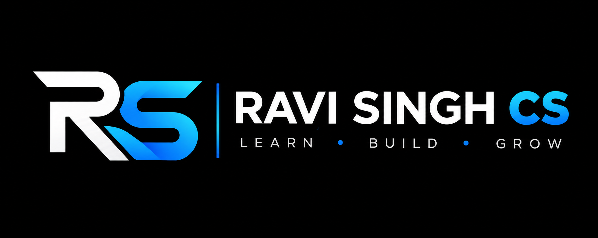

Computer Science Student
Building a strong foundation in programming, algorithms and problem-solving.

Ravi Singh CSCOMPUTER SCIENCE • DEVELOPMENT • TECHNOLOGY
Building digital experiences, exploring emerging technologies, and turning ideas into practical solutions.
01 — ABOUT
I’m Ravi Singh, a Computer Science student at the University of Delhi with a strong interest in software development and modern technology.
My journey combines academic learning with practical exposure to web development, software solutions, Artificial Intelligence, DevOps and digital technologies.
I enjoy understanding how technology works, building things from scratch and continuously improving my skills through practical projects.
My long-term objective is to grow into a skilled Software Developer and contribute to meaningful technology products and solutions.
Building a strong foundation in programming, algorithms and problem-solving.
Focused on designing, developing and maintaining reliable software.
Exploring AI, cloud, DevOps and modern web technologies.
Exploring real-world websites, software, SEO and digital projects.
02 — JOURNEY
Every line of code, every project and every challenge is part of the journey.
Completed Class XII and began focusing more seriously on Computer Science, technology and programming.
Explored Web Development, Full Stack Development, Artificial Intelligence, DevOps and digital technologies.
Started working on websites, applications, software solutions, SEO and digital projects.
Started BSc Computer Science and strengthened programming, mathematics, algorithms and computer fundamentals.
Continuing to learn, build projects and develop myself as an aspiring Software Developer.
Become a highly skilled Software Developer and build impactful technology products.
03 — EDUCATION
University of Delhi · Currently Pursuing · Second Year
I am developing a strong academic foundation in computer science and related disciplines while connecting academic concepts with practical development.
04 — TECHNICAL STACK
A continuously evolving collection of technologies, tools and concepts.
Technology is constantly evolving, and so is my skill set. The technologies listed here represent areas I have explored, practiced or am currently learning.
05 — PROFESSIONAL WORK
Your Complete Web, Apps & SEO Partner
DigiCode IT Solution is an IT and digital solutions initiative focused on helping businesses and organizations establish a professional digital presence.
Through DigiCode, I explore real-world digital requirements and practical technology solutions. This exposure complements my academic Computer Science education.
Business Websites · Custom Websites · E-commerce · Responsive Websites · Maintenance
Android · iOS · Custom Applications · Application Concepts
Custom Business Software · Digital Systems · Workflow Solutions · Management Systems
Search Optimization · Website Visibility · On-page SEO · Digital Presence
Social Media · Google Ads · Online Campaigns · Digital Branding
Logo Design · Banner Design · Social Media Design · Digital Branding
06 — APPROACH
Understand the requirement, objective, target users and expected outcome.
Break the requirement into clear technical and practical steps.
Consider structure, usability, user experience and technical requirements.
Develop the solution using appropriate technologies and practices.
Check functionality, responsiveness, usability and potential issues.
Refine and optimize the solution based on testing and feedback.
Provide a clean, reliable and maintainable final solution.
07 — PROJECTS
Practical projects and experiments representing my technical learning journey.
WEB DEVELOPMENT · BUSINESS
A professional business website created to present services, build credibility and provide customers with an easy way to understand and connect with the business.
08 — CURRENTLY LEARNING
09 — VALUES & MINDSET
Small improvements every day can create meaningful long-term progress.
Every technology represents an opportunity to discover something new.
Building real things is one of the best ways to understand technology.
Professional work requires responsibility, communication and consistency.
There is always something that can be improved—code, design, knowledge or process.
10 — CAREER
I aim to build a successful career in Software Development and become a technically strong professional capable of developing reliable and scalable applications.
I want to work with innovative teams, contribute to challenging projects, learn from experienced professionals and eventually create technology products that solve meaningful real-world problems.
Become a highly capable Software Developer who can understand complex requirements, design effective solutions and build technology products that solve meaningful real-world problems.
11 — HIGHLIGHTS
BSc Computer Science
Software & Web Development
DigiCode IT Solution
Continuously exploring modern technologies
Always developing technical knowledge
12 — CONNECT
Whether you want to discuss a project, technology, collaboration or simply connect professionally, feel free to reach out.
Delhi, India – 110095
Instagram: @its_ravi_thakur_